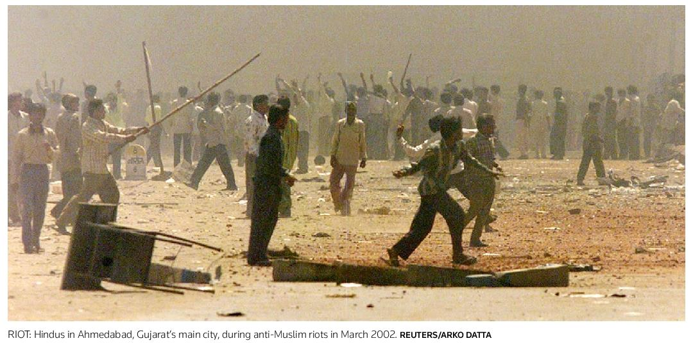
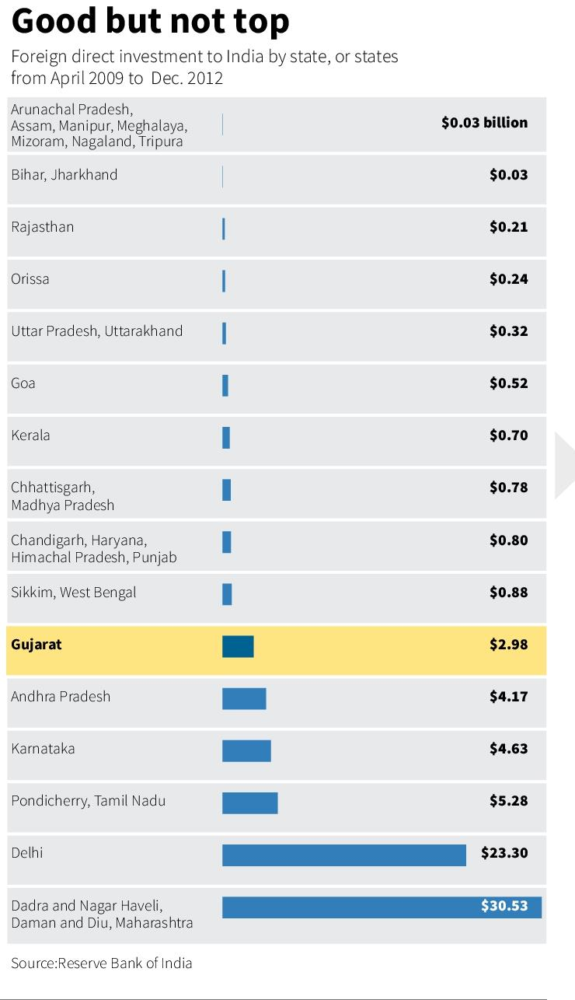
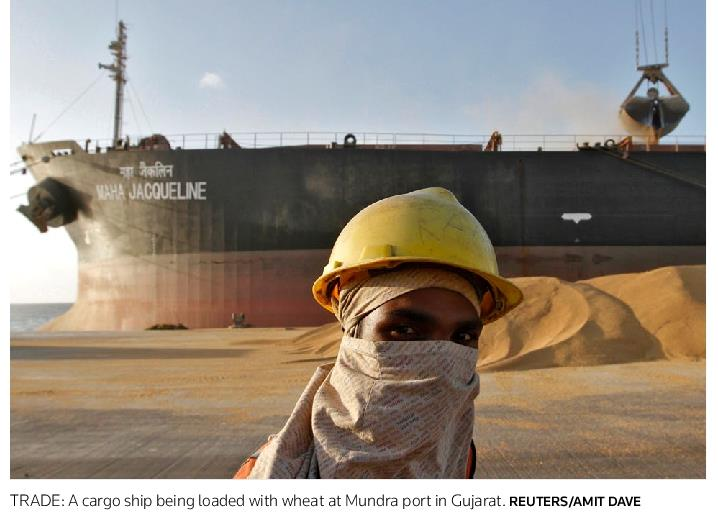
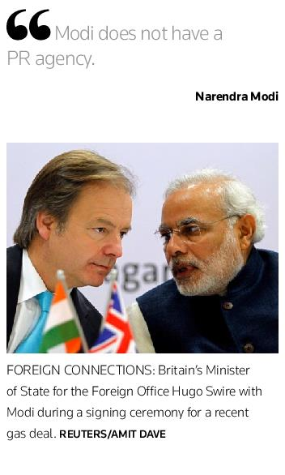
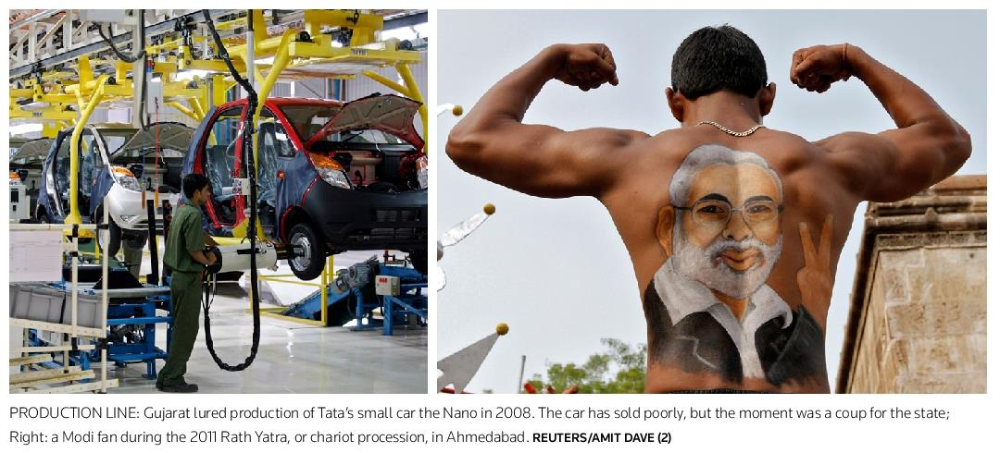
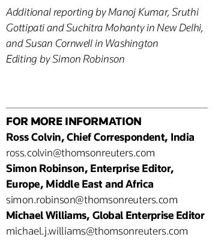

INDIA The remaking of Narendra Modi

quality, it's not a negative," Modi said. "If someone was an authoritarian then how would he be able to run a government for so many years? Without a team effort how can you get success?" He dismissed concerns about his style of management
"I always say the strength of democracy lies in criticism. If there is no criticism that means there is no democracy. And if you want to grow, you must invite criticism. And I want to grow, I want to invite criticism." "WE HAVE NO ORDERSTO SAVEYOU" The son of a tea-stall owner, Modi's journey into politics started young. As a teenager he joined the Rashtriya Swayamsevak Sangh (RSS), a voluntary right-wing group that serves both as the ideological incubator for "Hindutva", a hardline brand of Hindu nationalism, and as the philosophical parent of the BJP. Early on Modi was a "pracharak" or propagandist, living a monkish life and evangelising from village to village to win new recruits. That experience taught him "your life should be disciplined," he said, and that "what work you get, do it well." Modi joined the BJP in 1987. With a reputation as an efficient organiser he rose through the ranks, although his self-promotion and ambition earned him enemies along the way, according to various biographies
Parimal Nathwani, group president in Gujarat of one of India's biggest companies, Reliance Industries Limited, tells a story that captures Modi's drive to succeed. In January 2001, nine months before Modi became chief minister, Gujarat was hit by one of the worst earthquakes in India's recorded history. Modi, who was working at the BJP headquarters in Delhi, called Nathwani at Reliance to ask if he could borrow the company jet to fly to Kutch, the hardest-hit district
Modi did not think Gujarat's then-chief minister Keshubai Patel who was also BJP but was Modi's rival would allow him on the official aircraft, Nathwani recalls. But "he wanted to be the first to reach Kutch, to see and analyse what had happened so that he could make a report for the party leadership in Delhi." Nathwani lent him the jet handing Modi a political victory over his nemesis
Nearly four months after Modi's swearing-in, Gujarat was hit by another earthquake. This one was man-made; the aftershocks can still be felt
On Feb. 27, 2002, a fire aboard a train in the eastern Gujarat district of Godhra killed 59 Hindu pilgrims. While there are still questions over how it started, police blamed the blaze on local Muslims.That triggered a wave of violence in which Hindu mobs attacked predominantly Muslim neighbourhoods. India is a Hindu-majority nation; some 138 million Muslims make up about 13 percent of the population according to the 2001 census, the latest available data on religious makeup
The Indian government later put the death toll at more than 1,000; human rights activists estimate at least double that
INDIA The remaking of Narendra Modi

number died. Activists and relatives of the riot victims accused Modi and his government of giving Hindu rioters a free hand. New York-based Human Rights Watch said in a 2002 report entitled "We Have No Orders to Save You" that at best police had been "passive observers, and at worst they acted in concert with murderous mobs." In 2011, a Gujarati court convicted 31 Muslims for the initial attack on the train. Separately, gynaecologist Maya Kodnani, who Modi made a minister for woman and children in 2007, was sentenced to 28 years last August for handing out swords to rioters and exhorting them to attack Muslims. She is still serving her sentence
Modi has always rebuffed demands for an apology. He insists that he did all that he could to stop the violence. "Up till now, we feel that we used our full strength to set out to do the right thing," he said
A special investigation team (SIT) appointed by the Supreme Court to investigate the role of Modi and others in the violence said in a 541-page report in 2012 it could find no evidence to prosecute the chief minister. Most importantly, it cleared Modi of the most damaging allegation: that he had told senior officials to allow Hindu mobs to vent their anger
"Everyone has their own view. I would feel guilty if I did something wrong," Modi told Reuters. "Frustration comes when you think `I got caught. I was stealing and I got caught.' That's not my case. I was given a thoroughly clean chit." Asked if he regretted the violence, Modi compared his feelings to the occupant of a car involved in an accident. If "someone else is driving a car and we're sitting behind, even then if a puppy comes under the wheel, will it be painful or not? Of course it is. If I'm a chief minister or not, I'm a human being. If something bad happens anywhere, it is natural to be sad." At the lunch at the German ambassador's house Modi was pointedly asked by the gathered diplomats for reassurance
INDIA The remaking of Narendra Modi

that the bloodshed of 2002 would not be repeated. For years after the riots, EU ambassadors in New Delhi had largely kept their distance from Modi, although the EU never formally ostracised him
Britain, which has a large Gujarati population, did impose a formal diplomatic boycott on Modi for the deaths of three British citizens in the riots, but ended it last October. Washington maintains its ban, despite pressure from some Republican lawmakers in Congress. There has been no move at the U.S. State Department to reconsider its 2005 decision to revoke Modi's visa over the riots, a U.S. official told Reuters. Indeed, a U.S. government panel, the Commission on International Religious Freedom, recommended last May that Washington refuse any visa application from Modi
There has not been "full transparency about (Modi's) degree of involvement in the violence and his responsibility for that," the commission's chairwoman, Katrina Lantos Swett, told Reuters
At the lunch, Modi occupied a central seat at a long, rectangular dining room table, with German ambassador Steiner sitting to one side. His reply to the question about the possibility of further riots: there has been no communal violence in Gujarat since 2002, unlike in other parts of India
MARKETING MODI In the aftermath of the riots, Modi went to work improving his reputation
"What he has done is change the narrative and go for (economic) development," says Swapan Dasgupta, a New Delhi-based political analyst who has advised BJP leaders on media strategy. "From 2002 onwards he does not mention the riots any more. It does not come into his speeches. This focus on development was backed up by a very powerful publicity machine." Modi has built a reputation as an incorruptible and efficient technocrat who has electrified Gujarat's 18,000 villages the state is the only one in India with a near 24/7 power supply and slashed red tape to attract companies like Ford, Maruti Suzuki and Tata Motors
During Modi's 10 years as chief minister, Gujarat has grown an average of 10 percent a year. The state ranked fifth out of 15 big states in 2010/2011 in terms of per capita income. Modi boasts it is the "engine of India's economic growth." But opponents and some economists point out that Gujarat has a long tradition of entrepreneurship and that the state was doing well economically before Modi took charge. Other states, including Maharashtra, Karnataka, Andhra Pradesh, Tamil Nadu and Delhi, attracted more foreign investment than Gujarat between 2009 and 2012, according to India's central bank. The difference is Modi and his sales pitch. Economic success is important, he seems to realise. But so is telling that story again and again.As chief minister,Modi has embraced modern technology like no other Indian leader. He is active on Facebook and YouTube and has 1.8 million followers on Twitter, though aides say that number will have to grow substantially for it to have any impact in an election. During his reelection campaign last December, Modi used 3-D projection technology to appear simultaneously at 53 events a world record. He appears impeccably dressed, either in suits or stylish tailor-made kurtas, a knee-length Indian shirt, rimless glasses and a neatly trimmed white beard
"In terms of brand recognition he has succeeded eminently.Today a whole lot of people in different parts of the country at least know his name," said Abraham Koshy, professor of marketing at India's top business management school, the Indian Institute of Management in Ahmedabad, who nevertheless questions whether Modi can turn that recognition into votes.
INDIA The remaking of Narendra Modi

The Indian media and the ruling Congress party regularly claim that Modi has employed foreign help in particular APCO Worldwide, one of the largest PR agencies in the United States to help him rehabilitate his image and make him more acceptable to voters at home and governments abroad
While politicians around the world use PR agencies, Modi's political opponents hope to raise questions about Modi's achievements, say analysts. Opponents are trying to tell voters "appearance is not reality, what you see is very different from the real Modi," said Pralay Kanungo, a professor of politics and an expert on Hindu nationalism at Jawaharlal Nehru University in New Delhi
Modi's government hired APCO in 2009 to promote Gujarat's biannual business investment summits in India and abroad. But the Washington-based firm has repeatedly denied any involvement with Modi's political campaigns. When asked to comment, APCO pointed to a statement they made earlier this year: "We do not work on Chief Minister Modi's publicity campaign; we are not engaged to help resolve the (U.S.) visa issue." The man himself says he has no need for image makers. "I have never looked at or listened to or met a PR agency. Modi does not have a PR agency," he said
Modi says he rises at about 5 a.m. every day to do yoga and meditate. He reads the news for 15 minutes via Twitter on his iPad. He has not taken a holiday in 12 years, he said while walking Reuters around the garden outside his office
Modi lives alone and has little contact with his mother, four brothers or sister
VIBRANT GUJARAT One key to the way Modi has transformed his image is "Vibrant Gujarat", a project he launched in 2003. The biennial event is aimed at attracting investment to his state. But it is also, say some of those involved in the project, a propaganda exercise aimed at erasing the black stain of the riots and marketing Gujarat, and therefore Modi, to India and the world
"The image makeover was needed as Modi realised that as a hardliner, he would have limited acceptability in the political spectrum," said one of Gujarat's top civil servants. "So he started working on his image and the Vibrant Gujarat summit of 2003 was a big step towards it. The subsequent summits have further helped in shaping his image." The event started small but is now marketed as a kind of mini-Davos with Japan and Canada as partner countries. At the 2013 summit, 121 countries attended, according to the Gujarat government
In one memorable moment, Modi, India's richest businessmen and diplomats from Japan, Canada and Britain among others, raised hands together as a packed auditorium cheered. It was a powerful image, signalling Modi's acceptance by major foreign powers and business leaders. Anil Ambani, head of India's third-largest telecommunications company, called him a "lord of men." In what many political analysts viewed as a breakthrough moment for Modi, he persuaded billionaire industrialist Ratan Tata in 2008 to move production of the Nano, billed as the world's cheapest car, to the state. "He is good for business in India," says Ron Somers, head of the U.S.-India Business Council, a Washington-based lobby group that represents major U.S. companies in India
It is difficult to tell how much of the tens of billions of dollars pledged at the summits end up being invested, but the gatherings achieve one thing: "Vibrant Gujarat summits are basically media-focused events where the media can see Ratan Tata and the Ambanis," with Modi, said a former strategist who has worked with the government on the summits
At the same time, there is substance behind the glitz. Gujarat's government has invested heavily in roads, ports, agriculture and power, creating visible signs of progress in contrast to other parts of India. Projects that can take months or even years to be cleared elsewhere are regularly approved in days or weeks in Gujarat
A LEGACY QUESTIONED Modi's image is also helped by the missteps of the ruling Congress party. Prime Minister Manmohan Singh's national government has struggled through a series of corruption scandals. Economic growth is at a decade low
But as Modi moves closer to becoming his party's presumptive candidate for prime minister, his model of economic development is coming under greater scrutiny by both opponents and the Indian media
The biggest criticism is that he is too
INDIA The remaking of Narendra Modi


pro-business and that poor and minority communities, especially Muslims, have been left behind
"I don't think the people of India can be fooled with the development plank of Modi or the model of Modi's Gujarat,"said Shakeel Ahmad, chairman of the Islamic Relief Committee in Gujarat, sitting in his office in one of the poorer parts of Ahmedabad, Gujarat's largest city
Veteran human rights activist Nafisa Barot believes "his pro-business policies have hurt poor people and among them most are Muslims" and gave that message to EU officials recently
India's Planning Commission, which sets five-year economic plans for the country, has expressed concern about Gujarat's performance on a number of social indicators, such as malnutrition, maternal mortality, access to health, education for girls and minorities, and water, and says the state should be doing a better job on these issues given the size of its economy
"It appears that the high growth rate achieved … over the years has not percolated to the marginalised sections of society," the Planning Commission said in its 2011 India Human Development Report
Modi says he is tackling these issues. He has proposed spending 42 percent of his 2013/2014 state budget on education, nutrition, healthcare and other social welfare programmes the Planning Commission says it would like him to spend even more but complains that efforts to redress the imbalances are hampered by a lack of reliable data
"We do believe in inclusive growth, we do believe that the benefits of this development must reach to the last person. We're doing a good job, that's why the expectations are high. As they should be. Nothing is wrong," Modi told Reuters
Modi will now take his mantra of good governance and development on the road to try to convince voters to vote his party into power nationally for the first time in 10 years. Pollsters expect a close election with regional parties likely to be king-makers. Even if the BJP wins the most votes it could struggle to find partners to form a coalition government, especially with Modi at its head
The man himself dismisses the notion he is divisive
"I'm not in favour of dividing Hindus and Sikhs. I'm not in favour of dividing Hindus and Christians. All the citizens, all the voters, are my countrymen," Modi said. "Religion should not be an instrument in your democratic process."